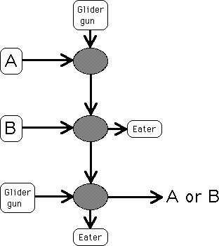

|  |
| Finally, suppose bith A and B have 0s in the current location. |
| The hole in the A stream lets the glider from the top glider gun stream through, so a 1 is transmitted to B. |
| But there is no glider in the B stream to kill this glider, so it is transmitted to the left glider gun stream. |
| The glider in the top stream kills the left gun stream, contributing a 0 to the current location of A or B. |
| That is, if both A and B are 0, then A and B is 0. |
Return to the or operation.